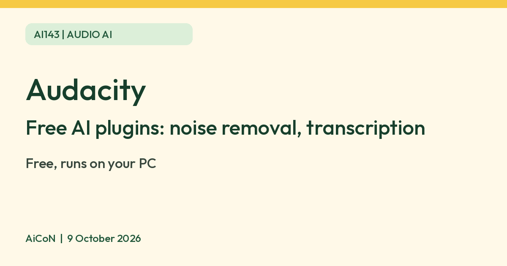

Audacity: free AI plugins for noise removal and transcription
Audacity is a free audio editor, and its free OpenVINO AI plugins add noise removal, stem splitting and Whisper transcription that run on your own PC. Check version compatibility before you install.

What it is
Audacity is a free, open-source audio editor. Intel makes a free set of AI plugins for it, called OpenVINO AI plugins. The Audacity site lists these effects: music separation into drums, bass, vocals and other instruments, noise suppression, music generation, Whisper speech-to-text transcription, and audio super resolution. The plugin page says the AI features run on your own PC with no internet needed.
Is it free
Yes. Audacity's transcription page says: "Audacity is free and open source, and the OpenVINO AI plugin that powers Whisper Transcription is also free." It also says there are no minute caps, no subscriptions and no watermarks.
How to try it
- Check the OpenVINO plugin release instructions first, then install the supported Audacity version from the official site.
- Download the OpenVINO AI plugin from the Audacity AI plugins page and install it.
- Open a recording, select the part you want, and choose the effect. For transcription, go to Analyze, then OpenVINO Whisper Transcription.
- Pick a Whisper model and language, then click Apply. The text appears as a label track you can export as subtitles or text.
Limits to know
- This is for a computer, not a phone. The current sources disagree on platform scope: Audacity's transcription page says Windows, Mac and Linux, while Intel's repository links ready-made Windows releases and Windows/Linux build instructions. We did not verify a Mac installer or a ready-made Linux package.
- Audacity's own plugin page warns that the plugins are not yet compatible with the latest Audacity version. Check the version the plugin page asks for before you install.
- Audacity says larger Whisper models are more accurate but slower. Noisy audio and overlapping speakers lower accuracy.
- We did not test the plugins ourselves.
Frequently asked questions
Does it work offline?
Audacity says processing runs on your own computer. Downloading Audacity, the plugins and any required model files still needs an internet connection first.
Which Whisper model is used?
Audacity says it runs OpenAI's Whisper speech model through whisper.cpp.
Sources: Audacity AI plugins download, Audacity transcription page, Audacity plugins, AI, Intel OpenVINO plugins on GitHub. Checked 9 October 2026.